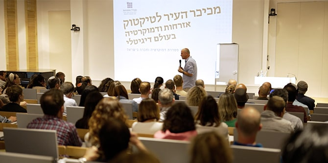
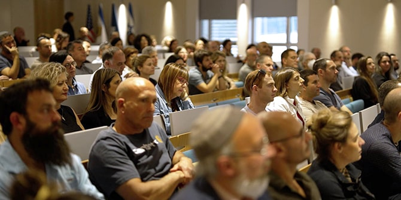
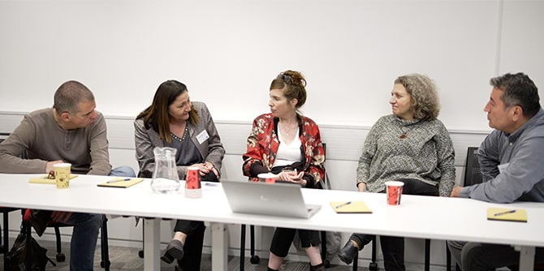

Dr. Micah Goodman discusses civics in the digital age (Photo: Gavish Media)
The current debate in Israel regarding the role of the judiciary has been particularly intense and heated. The past few months, while depicting the vibrancy of Israeli democracy, have been an especially challenging period for much of the Israeli public, including the wider Mandel community. The faculty, staff, fellows, and graduates of the Mandel Foundation–Israel represent a very wide range of viewpoints on many important issues, including the current debate. The juncture at which Israeli society now finds itself makes it critical for the wider Mandel community to gain an in-depth understanding of the processes that have led to the current situation, the possibilities it presents, and the various consequences it may have.

Listening to Dr. Goodman (Photo: Gavish Media)
For these reasons, the Mandel Graduate Unit developed a series of lectures, talks, and workshops under the heading “Democracy and Society in Israel.” The series provides an insider's view of Israel's justice system; examines changes to the socio-democratic order occurring in different countries around the world; explores the impact of technology on the fabric of social relations; analyzes different aspects of the current crisis in Israel; and seeks to encourage initiatives that can help strengthen and invigorate civil society and ensure the continued existence of a lively marketplace of ideas. The lecturers vary in their views, thereby exposing the attendees to a variety of voices. They include former Ministers of Justice, a former vice president of the Supreme Court, Mandel faculty members and others.
 A classroom discussion (Photo: Gavish Media)
A classroom discussion (Photo: Gavish Media)
The activities are taking place at different locations throughout Israel or via Zoom; some as one-time events and others as the start of a continuing series. Among the activities held so far were a lecture by well-known Israeli journalist
Oren Nahari about the crisis of democracy in the world, a lecture by
Dr. Micah Goodman on civics in the digital age, and a lecture by Mandel faculty member
Rabbi Mishael Zion entitled "On Tyranny: Active Citizenship in the Age of Democratic Disintegration.” In the days prior to Israel's Independence Day, a panel of experts will discuss the meaning of Megillat Ha’Atzmaut, Israel's Declaration of Independence.

Exchanging ideas (Photo: Gavish Media)
The series is an expression of the commitment of the founders of the Mandel Foundation to a vision of Israel as a nation state of the Jewish people with equal rights for all of its citizens.
{kind=link}
{kind=link}
{kind=link}